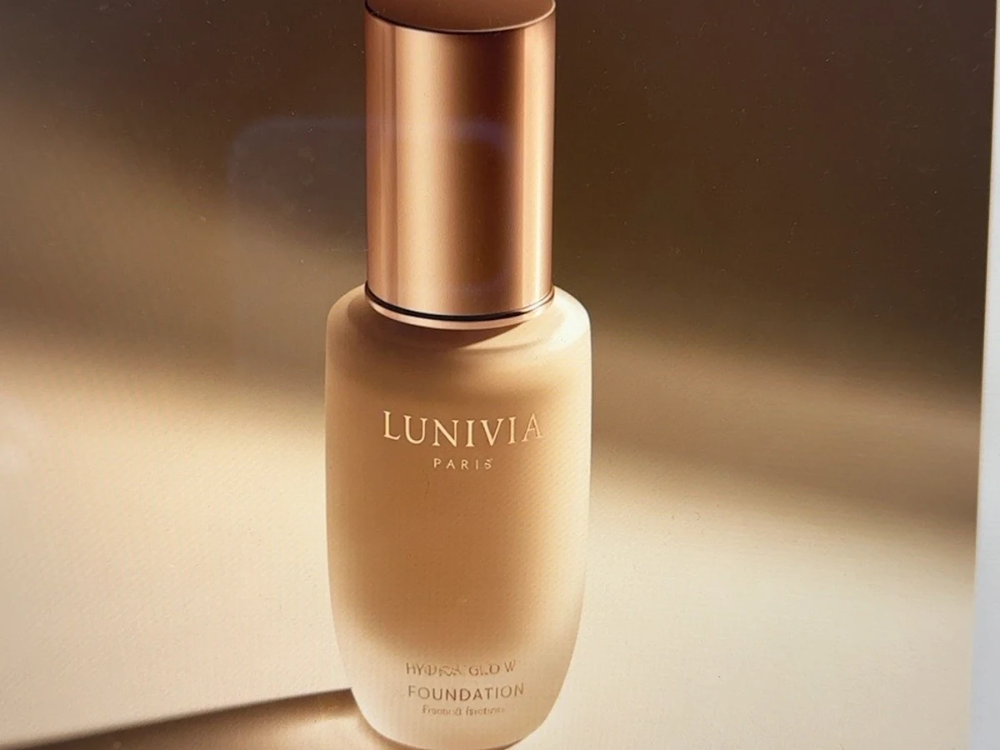

Foundation · Luminous
Hydra Glow Foundation
CAD $42
A lightweight, medium-coverage foundation designed to create a smooth, fresh-looking complexion with a soft luminous finish.
NET CONTENT30 mL / 1.0 fl. oz.
FINISHNatural luminous / soft glow
BEST FORNormal to dry skin
Portfolio demo only. No real purchase will be processed.
Why you'll love it
Product features
- Soft luminous finish
- Medium, buildable coverage
- Lightweight, easy-to-blend texture
- Designed for normal to dry skin
How to use
Apply a small amount to the center of the face and blend outward with fingers, a sponge or foundation brush. Build in light layers where more coverage is desired.
Ingredient concept
Illustrative demo formula: water-based emulsion, lightweight emollients, humectants, cosmetic pigments, film-forming agents and skin-conditioning ingredients.
Ingredient information is illustrative and not a commercial formulation.